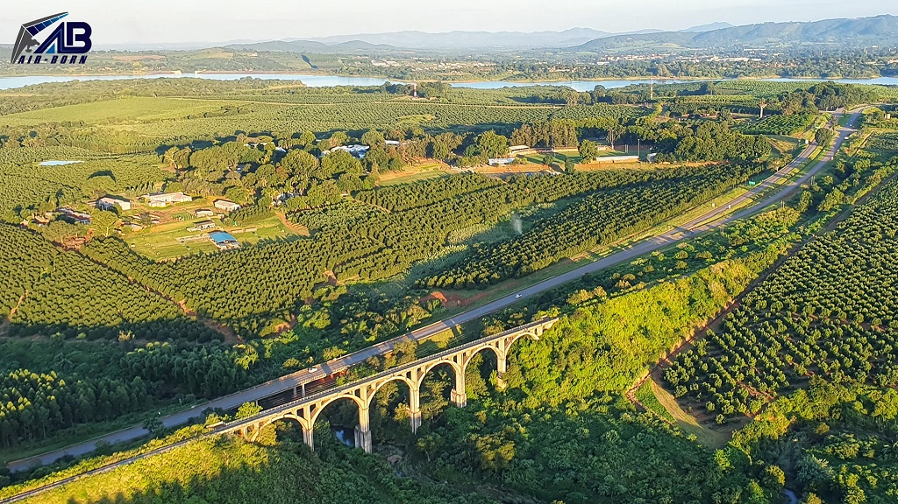
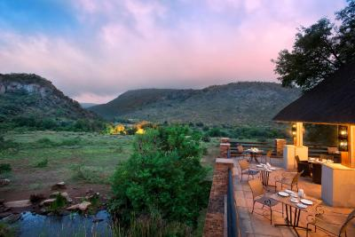

Tzaneen
I had the abiity to visit Tzaneen twice in the year 2018, the first time was simply to get a feel of place and I simply got to enjoy the rich heritage of the Tsonga people and their fruit & Veg Farms

Mabeskraal
Mabeskraal is simply home away from home, it is a Place place where I was birthed from and it is a place that I continually visit for rejuvination and for strengthening.

Mpumalanga
During my undergraduate days I fell in love with a damsel and she was from the land of Mpumalanga in Bushbuckridge. So during our love, one day I was inspired to visit her at her home province and that was a whole beautiful experience, no lie the land is preetty hot and a bit dry but things are affordable and one can get a lot done through the day.